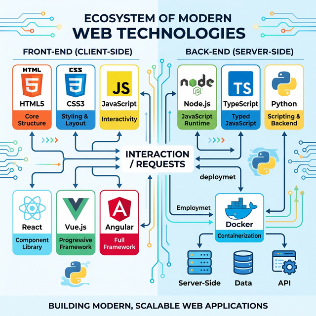

Экосистема веб-разработки
На изображении ниже представлена схема современного стека веб-технологий, включающая фронтенд и бэкенд инструменты, которые составляют основу современной веб-разработки.

Обзор экосистемы современных веб-технологий
Полезные ссылки
Подробнее о современных веб-технологиях можно узнать на сайте MDN Web Docs — это один из лучших ресурсов для изучения HTML, CSS, JavaScript и других веб-технологий.
Также рекомендуем ознакомиться с roadmap.sh — интерактивной дорожной картой для веб-разработчиков.